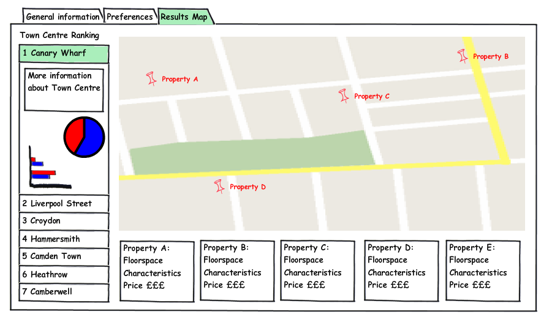

User Interface Mockup for GIS
As part of my research work, I am developing a spatial decision support system for inward investment promotion. The design and user interface for the system needs careful consideration and development, given that the end product will be used primarly by non experts.
Having decided on a basic methodology for the decision making process, we are now in the process of developing UI mockups, which we can present to stakeholders to get their opinion of the system. UI mockups allow an early view on the look & feel , i.e. usability of the system, and allow the designer to easily collect feedback from users and integrate changes without having to modify/rewrite code. For my project, I also hope that I can give stakeholders a better understanding of the system development process and of the project’s main aims through this showcase.

I have been looking at different methodologies for producing such UI mockups, and how they have been applied to GIS & SDSS type projects. I must say that I have only found sparse evidence of systematic efforts by GIS practitioners to apply usability principles through the use of mockups in GIS development activities. My view also is corroborated by Muki in his recent blog post, where he argues that usability and the processes in software development that ensure good usability still seem to be considered a nice to have, and the GIS industry lacks a “usability culture“, inherent other industry sectors.
But I digress… As always, there are multiple methods of doing UI mockups. One of the most straightforward and widely used methods uses paper, pen and scissors to physically create the UI elements, which can then be arranged into an UI mockup. This of course is very flexible as you can easily create and assemble together whatever user interface elements one needs or wants.A digital equivalent is to use PowerPoint or any other general purpose drawing tool to generate the UI mockup. But there are also drawbacks. Physical UI mockups can get lost/destroyed, are not easy to revise, and changes can’t easily be tracked. Digital mockups made with PowerPoint are also cumbersome to generate, and one needs to invest a lot of time into generating basic UI elements (altough some templates to get you started are available). With PowerPoint mockups, you can even generate basic interactivity inside the mockup by creating links between slides, altough this is still cumbersome.
Obviously, a specific quick and dirty design tool for mockups would be great, and thats exactly what I found with Balsamiq Mockups. They have both a free online tool version as well as a desktop application version available, which supports features such as dynamic links between screens. Also, Balsamiq Mockups intentionally uses hand-drawn UI elements to generate “paper quality mockups“, so that people don’t get attached to “that pretty color gradient” or think that your mockup has actual code behind it and is “practically done”.
I just spent the afternoon creating such a mockup for my project, and I am more than happy with the results, even though they only offer a basic “map” element which is specific to GIS. But the rest of the template of pre defined UI elements is rich enough to model most GIS related UI.
I would urge any GIS developer who hasn’t used mockups for their application development process before to give it a try and enjoy the benefits of better usability for their applications and happier users!

Hi Patrick,
Thanks for the links and good to see that you’re working on usability aspects of your application. Paper Prototyping has been used in GIS – not very frequently – since the mid 1990s (see http://portal.acm.org/citation.cfm?id=266399.266412) . The real issue with paper prototyping is that it’s a great tool to discuss the interface with end users – so make sure that your end users are happy with it!
This is a great methodology! I’ve been using SketchFlow as a great tool to interactively take my clients through the design/build process. The nice feature about this tool is that it is part of the Microsoft Expression Studio kit and takes the “drafts” to final product almost seamlessly.